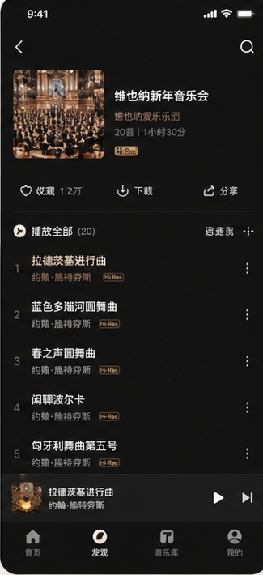

内行场景派真正缺的不是更多参数:
而是听得懂的故事与场景入口
你通篇写这个奖那个奖，对我这种非专业的人其实没什么用。— 黄先生

场景歌单：伴你入眠、世界音乐精选

专辑介绍栏：演奏家奖项 vs 曲目故事
曲目叙事
黄先生能听出 Hi-Res 的通透与层次，但打开专辑介绍时更关心「这首曲想表达什么」而非演奏家获了多少奖。他希望曲名有中文或括号注释，并补充听曲指南，让非专业听众也能跟着故事进入古典乐。
场景入口
他几乎不用搜索，场景分类与歌单策展是主路径：伴你入眠、经典之声、世界音乐精选。睡前用 SoundX 定时一小时，说明改版应把「按情绪选曲」放在比「按作曲家」更靠前的位置。
终端缺口
居家听感满意，但没有 PC 端导致上班只能开网易云；Hi-Res 不能下载、跨房间蓝牙卡顿、民族与世界音乐偏少，也削弱了他把专区当「唯一高品质入口」的意愿。